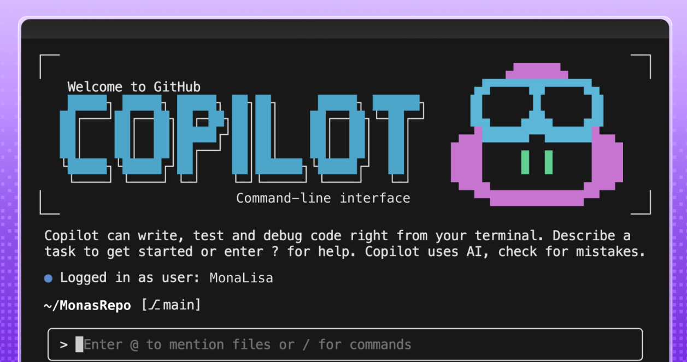

UPR 1 (WB), 18.02.2026
Animated ASCII Banner for Copilot CLI
GitHub
built an animated ASCII banner for Copilot CLI that required over 6,000 lines of TypeScript
to handle terminal
inconsistencies and accessibility constraints. The project involved creating custom tooling
for frame-by-frame animation editing,
mapping brand colors to ANSI codes that work across different
terminals and accessibility settings, and using Ink (React for terminals) to render animations without flickering.
By the numbers
- 3 seconds of animation
- ~20 frames
- ~6,000 lines of TypeScript
- Dozens of terminal + theme combinations tested
- vetova.bas@gmail.com
